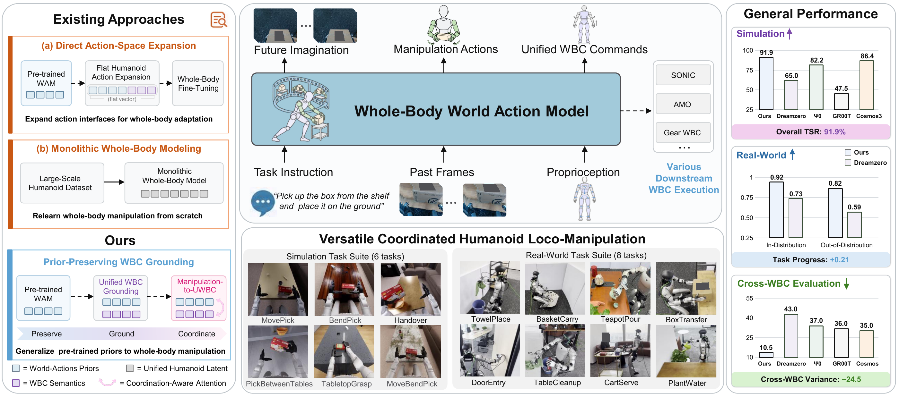
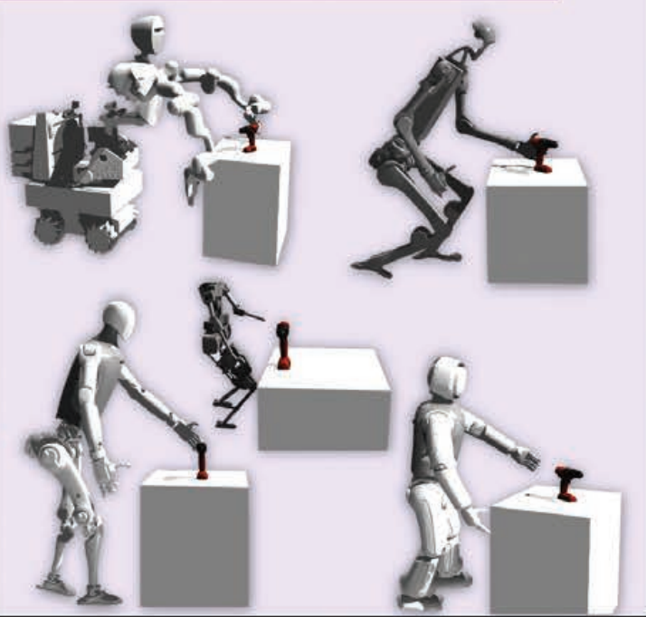

World-action models, whole-body coordination and transferable humanoid behavior.

WholeBodyWAM: Generalizing Pre-trained World-Action Priors to Humanoid Loco-Manipulation via WBC-Grounded Coordination
Zhuo Li, Yiming Yao, Jim Tan, Mengjie Jing, Zhipeng Dong, Fei Chen
arXiv preprint, 2026
Paper / Video / Media coverage (WeChat) / Project
A world-action model extends pre-trained manipulation priors to humanoid loco-manipulation through unified whole-body controller grounding and coordination-aware attention.

Human–Humanoid Robots’ Cross-Embodiment Behavior-Skill Transfer Using Decomposed Adversarial Learning from Demonstration: HOTU, a Human–Humanoid Robots’ Skill Transfer Framework
Junjia Liu, Zhuo Li, Minghao Yu, Zhipeng Dong, Sylvain Calinon, Darwin Caldwell, Fei Chen
IEEE Robotics & Automation Magazine (RAM), 2025
Paper / Code
A unified digital human prototype supports transferable behavior and manipulation skills across humanoid embodiments, reducing the need to retrain for every robot platform.